Former The End Men frontman Matthew Hendershot is back with a brand new tour. People have called Hendershot everything from “the love-child of Tom Waits and Jack White” to “the rebirth of Joe Cocker” to “a musical fall down a flight of stairs with a voice like chocolate melted in an ashtray.” The End Men were the premiere Brooklyn, New York modern blues duo that released 6 albums, toured Europe 8 times, the USA 6 times since 2010, and received the 2016 CXCW Best Performance Award. Now, after three years away, Hendershot is back with a unique one-man show that blends new material with familiar favorites from The End Men, and ranges from full blown amplified rock to boozy blues to intimate acoustic shanties and dark banterous tales.
HENDERSHOT is now booking dates between April 8th and April 23rd, 2022!
He is available for solo shows, festivals, podcasts, radio shows, private events, living room concerts and any other kind of experience. He will even offer dinner and a show, in which he cooks a meal and plays a concert. His already legendary cooking skills fed hungry artists for three months at the IBUG Art Festival in Saxony.
Interested? Then get in touch with us through the contact form below, or reach us at tour@wellroundedhoodlum.com.
Best wishes and greetings from Leipzig.